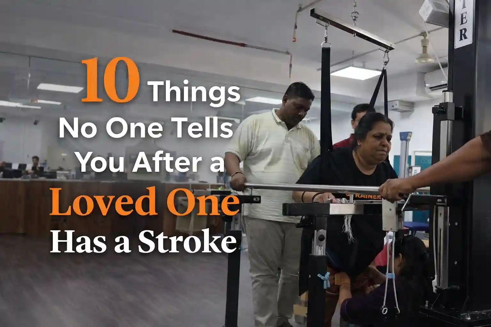
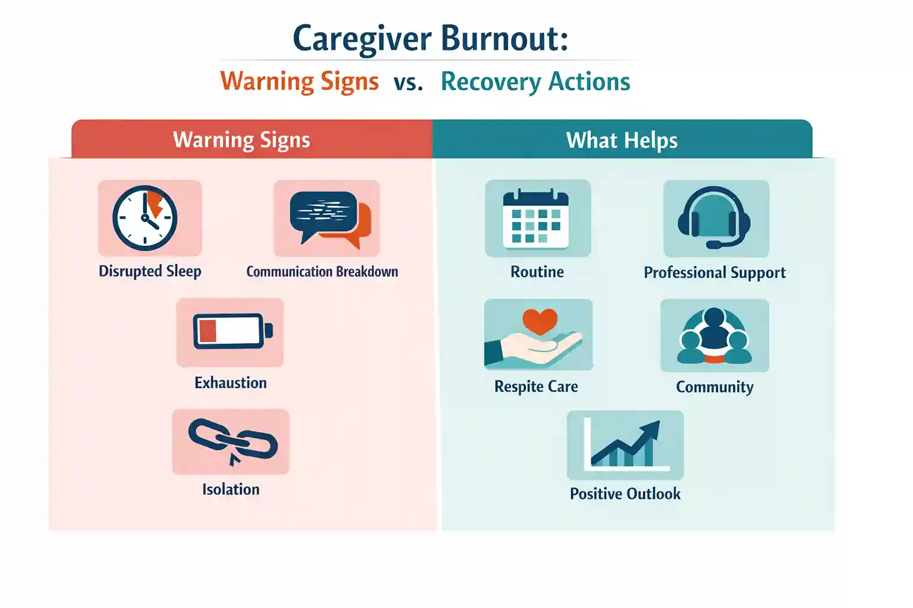
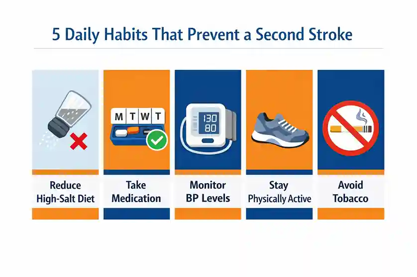
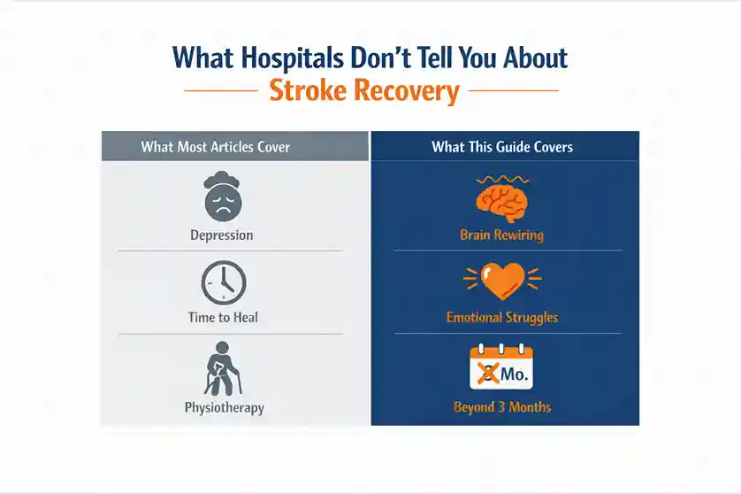

10 Things No One Tells You After a Loved One Has a Stroke


06
APR

Dr. Krutika Bhadane
PT (Neuro), BPTh, MPTh (Neurosciences), 3+ years clinical
experience in neurological rehabilitation
10 Things No One Tells You After a Loved One Has a Stroke
It was a Tuesday morning when Priya's phone rang at 2:47 AM. Her father, a 58-year-old retired schoolteacher who could recite Hindi poetry, argue cricket statistics, and cook a full Sunday lunch, had collapsed in the bathroom. By the time she reached the hospital, the doctors were calm and efficient. The clot was caught early. The scans looked "manageable." A week later, she brought him home.
That's when nobody warned her about anything that actually mattered.
Nobody told her that her father would laugh at the wrong moments. Loudly, helplessly. Nobody told her she would quietly grieve the man who used to call her every Sunday, even though he was sitting right there in the next room. Nobody told her that the hardest part of a stroke isn't the hospital. It's everything after.
If you are reading this, you are probably living something similar. You may have a parent, spouse, or sibling who has recently had a stroke, and you are trying to figure out what comes next. According to the World Stroke Organization Fact Sheet 2025, the global cost of stroke is over US$890 billion annually. The emotional cost carried by millions of families is impossible to price.
In India, stroke is the fourth leading cause of death and the fifth leading cause of disability, with 119 to 145 new cases per 100,000 people every year. Most families walk out of hospitals with a discharge summary, a list of medications, and almost no roadmap for what comes next. This blog is that roadmap.
Here are 10 things that hospitals rarely tell families but that every caregiver needs to know.
What Most Articles Get Wrong

Before we get into the 10 points, here is a quick look at what top websites say versus what they consistently leave out:
| What Most Websites Cover | What This Blog Covers That Others Miss |
|---|---|
| Post-stroke depression | Pseudobulbar Affect (PBA): laughing/crying with no trigger |
| Recovery takes months | The Plateau Illusion: brain still rewires after progress seems to stop |
| Hire a physiotherapist | Overstimulation causes setbacks: too many visitors, TV noise, chaos |
| Caregiver stress is real | Ambiguous grief: mourning someone who is still alive |
| Second stroke risk exists | How Indian dietary habits directly increase relapse risk |
| Personality may change | Why survivors seem selfish, it is brain damage, not character |
1. The Person You Brought Home May Seem Like a Stranger
This Is Not Who They Chose to Be. It Is What the Brain Damage Did.
This is the one thing almost no website explains clearly. After a stroke, your loved one may become suddenly short-tempered, emotionally distant, or surprisingly self-centered. They may stop asking how you are. They may seem unaware that you are exhausted.
Here is the surprising truth: this is not a personality flaw. It is a neurological consequence. According to Geisinger Health (2024), stroke can damage areas of the brain responsible for empathy, including the right supramarginal gyrus and anterior insula. The survivor is not choosing to be dismissive. The parts of their brain that process other people's feelings have been physically injured.
What you can do: do not take it personally, and do not compare them to who they were. Talk to the rehabilitation team about behavioral therapy options. This is treatable, not permanent in most cases.
2. Laughing at the Wrong Moment Is Not Rudeness. It Is a Medical Condition.
Most Families Have Never Heard of Pseudobulbar Affect (PBA)
Imagine your loved one laughing uncontrollably at a solemn moment, or bursting into tears when watching a casual TV commercial. This is not emotional instability. It is a neurological condition called Pseudobulbar Affect (PBA).
According to the American Stroke Association, PBA causes involuntary, uncontrollable bouts of crying, laughter, or anger that occur without any emotional trigger, or wildly out of proportion to what triggered them.
A 2024 study published in Sage Journals found that post-stroke emotionalism affects roughly 1 in 5 stroke survivors at six months post-stroke. Yet it remains one of the most underdiagnosed conditions in Indian rehab settings.
Key triggers for PBA episodes: Fatigue, stress, anxiety, crowded environments, background noise, and emotional conversations.
What you can do: ask the neurologist specifically about PBA. It is treatable with medication, including low-dose antidepressants, and with behavioral therapy. The first step is naming it.
3. Silence Is Actually a Healing Tool
Stop Filling the Gaps. It Is Making Communication Harder.
When your loved one struggles to find a word mid-sentence, every instinct tells you to jump in and complete it for them. It feels helpful. It is actually harmful.
According to Cedars-Sinai neurologists, interrupting or finishing sentences creates confusion for stroke survivors with aphasia. It disrupts the brain's retrieval process and makes the communication harder, not easier. "People feel the need to fill up the silence," their experts note, "but it gets worse when someone is shouting at you as if you can't hear."
The damaged brain needs extra time to retrieve language from memory. Giving it that time, even 15 to 30 uncomfortable seconds of silence, is a form of therapy.
What you can do: practice waiting. Ask one question at a time. Lower your voice, not raise it. And never finish their sentence unless they specifically ask you to.
4. Too Many Visitors Can Set Recovery Back
The Brain After a Stroke Is Easily Overwhelmed, Even by Love
Extended family arriving to offer support. The TV running in the background all day. Multiple conversations happening at once in the hospital room. All of this feels warm and caring. But for the recovering brain, it is an energy drain.
According to Flint Rehab, the healing brain does not tolerate too much noise, light, or overstimulation. Even background noise, which healthy brains filter out automatically, drains the limited energy reserve of a healing brain, leaving less capacity for actual recovery.
In Indian households especially, where recovery tends to happen in shared family spaces with constant movement and noise, this is one of the biggest invisible barriers to healing.
- Limit visits to 2 to 3 close family members at a time
- Keep the TV off or at very low volume during rest hours
- Ask visitors to speak one at a time and avoid multiple conversations
- Create a quiet, structured daily routine with defined rest periods
Is your loved one recovering at home in a noisy environment? Explore Apricot Care's structured physiotherapy programs in Pune designed to create the right healing environment for faster recovery.
5. The 3-Month Mark Is Not the Finish Line
The Plateau Illusion Is One of the Most Costly Mistakes Families Make
Here is what most families are told: the first three months are the most critical window for recovery. Here is what most families are not told: recovery does not stop at three months.
The American Stroke Association confirms that some survivors continue to recover well into the first and second year. The brain is rewiring itself through neuroplasticity, forming new neural connections to compensate for damaged ones. But this process requires structured, consistent stimulation.
What happens too often: families stop aggressive physiotherapy and occupational therapy at three months, thinking recovery has plateaued. The brain is still capable of progress, it just needs continued, expert-guided input.
What most people do not realize is that stopping rehabilitation at three months is like stopping antibiotics halfway through the course. The window has not closed. You have just stopped using it.
6. You Are Allowed to Grieve, Even Though They Are Still Here
Ambiguous Loss Is Real, and It Has a Name
This is perhaps the most emotionally honest point in this entire article, and the one that almost no stroke recovery website addresses.
You may find yourself grieving the person your loved one used to be: the way they laughed, the way they made decisions, the role they played in the family. And then you feel guilty, because they are still alive. They are right there.
This experience is called ambiguous loss, a term from psychological research describing grief that occurs when someone is physically present but psychologically changed. It is completely normal. And left unaddressed, it leads directly to caregiver burnout.
A PubMed-published Indian hospital study found a strong correlation (0.72) between caregiver burden and depression, meaning caregivers who do not process their grief are at serious risk of developing clinical depression themselves.
What you can do: acknowledge that you are carrying two kinds of weight: practical and emotional. Seek caregiver-specific counseling. This is not a luxury. It is part of the recovery plan.
7. Another Stroke Can Happen, and Prevention Starts at Home
This Is the Conversation Discharge Summaries Rarely Have

Stroke survivors face a significantly elevated risk of a second stroke. The American Stroke Association is clear: diet, exercise, medication compliance, and regular specialist visits are non-negotiable after a first stroke.
In India, the challenge is compounded. A 2024 GBD Analysis published in Scientific Reports identified dietary risks and hypertension as major contributors to stroke burden in Maharashtra specifically. High-salt cooking, oil-heavy diets, irregular medication routines, these are everyday realities in Indian households that directly fuel relapse risk.
| Risk Factor | Why It Matters Post-Stroke | What Families Can Do |
|---|---|---|
| High blood pressure | Primary driver of recurrent stroke | Daily BP monitoring at home |
| Salt-heavy diet | Elevates BP and vascular stress | Work with a nutrition therapist |
| Missed medications | Anticoagulants are critical | Use pill organizers, set alarms |
| Physical inactivity | Increases clot formation risk | Structured physiotherapy plan |
| Smoking / tobacco | Directly increases stroke incidence | Enlist medical support to quit |
Worried about your loved one having another stroke? See how our stroke care and rehabilitation program helps survivors in Pune manage risk factors and build a safer recovery plan at home.
8. The Financial Shock Is Real, and Nobody Prepares You for It
Here Is a Framework to Plan Before the Bills Pile Up
A study published in Nature Scientific Reports found that stroke patients in India can face up to INR 50,000 in direct medical costs. This number does not include the indirect costs that quietly accumulate afterward.
According to AARP caregiving research, calculating the true cost of caregiving must include income lost from the patient being unable to work, as well as the working hours the primary caregiver has to sacrifice, a double financial hit that most Indian families are completely unprepared for.
- Direct costs: Hospitalization, ICU, medications, follow-up scans
- Rehabilitation costs: Physiotherapy sessions, occupational therapy, speech therapy
- Home modification costs: Grab bars, wheelchair ramps, bathroom safety aids
- Caregiver income loss: Time off work, reduced hours, career interruptions
- Long-term care costs: In-home nursing, ICU-at-home services if needed
What you can do: request a detailed cost projection from your rehabilitation team early. Know what your insurance covers. Plan for at least 12 to 18 months of rehabilitation-related expenses.
9. Your Loved One's Intelligence Is Fully Intact
Do Not Talk Down to Them, Even If They Cannot Talk Back
This one matters enormously in Indian families, and it is almost never said aloud.
When a stroke survivor cannot speak clearly, or struggles to find words, or needs help with basic tasks, well-meaning family members begin speaking to them in simplified sentences. Baby talk. Or worse, they start making decisions on their behalf without asking.
What most people do not realize is that a stroke does not affect intelligence. According to Flint Rehab, stroke is a brain attack that deprives specific areas of oxygen. The damage impairs skills like language or movement, but the person's full intelligence, life experience, and self-awareness remain intact. They understand everything happening around them. They hear how you speak to them.
The psychological damage of being treated as incapable can be as destructive to recovery as the stroke itself.
What you can do: always speak to them as the adult they are. Ask for their opinion. Give them choices. Include them in conversations, even if their response is slow or limited. Dignity is not optional, it is therapeutic.
10. Caregiver Burnout Is Not Weakness. It Is a Medical Signal.
If the Caregiver Collapses, the Survivor Suffers Too

The final thing nobody tells you is this: you cannot pour from an empty cup. And stroke caregiving empties cups faster than almost any other caregiving role.
An Indian hospital-based study on caregiver burd found a strong correlation (0.84) between caregiver burden and both depression and anxiety. The study concluded that a structured caregiver intervention is urgently needed in the Indian healthcare setting, because caregivers are quietly becoming secondary patients.
The Caregiver Action Network recommends that caregivers prioritize daily self-care, attend support group meetings, and explore respite care options to manage stress before it becomes a clinical problem.
- Tell people specifically what help you need, not "I'm fine"
- Schedule one hour per day that is yours, non-negotiable
- Join a caregiver support community, online or in-person
- Request a psychological check-in as part of the rehab program
- Accept respite care or professional help without guilt
Here is the surprising truth: studies show that the quality of caregiver health directly predicts the quality of survivor recovery. Taking care of yourself is not selfish. It is clinically necessary.
Feeling overwhelmed as a caregiver? Apricot Care's professional caregiver support services in Pune are built to help both the survivor and the family heal together.
How Apricot Care Helps Families Navigate All of This
At Apricot Care Assisted Living and Rehabilitation in Pune, we work with both stroke survivors and their families, because we know that recovery is never a solo journey. Our multidisciplinary team addresses the clinical, emotional, and practical sides of post-stroke life: from neurophysiotherapy and speech therapy to psychological rehab and structured caregiver training.
We offer in-clinic care, home visits, and online therapy, because every family's situation is different. If your loved one has recently had a stroke and you are trying to figure out where to begin, our team in Kharadi, Pune can help you build a plan that actually works.
Final Thoughts
A stroke changes everything in one moment. But recovery, real and meaningful, happens over months and years, with the right information, the right support, and the right team around you.
Here is a quick summary of the 10 things this article covered:
- Personality changes are neurological, not a character shift
- PBA (uncontrollable laughing or crying) is a diagnosable, treatable condition
- Silence during communication is a therapy tool, not a gap to fill
- Overstimulation from noise and visitors actively slows brain recovery
- Recovery does not plateau at 3 months. Neuroplasticity continues with the right input.
- Caregiver grief is real, valid, and needs to be addressed
- Second stroke prevention starts with daily habits at home, not just medications
- Financial planning for at least 12 to 18 months is essential from day one
- Intelligence is fully intact. Treat your loved one with full dignity.
- Caregiver burnout is a medical signal, not a personal failure
Which of these 10 points surprised you the most? And what is the one thing you wish someone had told you on the day you brought your loved one home from the hospital? Share your experience, because every story helps another family feel less alone.
Frequently Asked Questions (FAQ)
How long does stroke recovery take in India?
Recovery timelines vary widely depending on the severity of the stroke, the areas of the brain affected, and the intensity of rehabilitation. While the fastest gains often happen in the first three to four months, meaningful recovery can continue into the first and second year with consistent, structured therapy.
What is pseudobulbar affect and is it common after stroke?
Pseudobulbar affect (PBA) is a neurological condition causing involuntary, uncontrollable episodes of laughing or crying that are disconnected from the person's actual emotional state. It affects approximately 1 in 5 stroke survivors at six months post-stroke and is treatable with medication and behavioral therapy.
How can I prevent a second stroke at home?
Key prevention steps include daily blood pressure monitoring, strict medication adherence, a low-salt diet, regular physical activity (guided by a physiotherapist), no tobacco use, and regular follow-ups with a neurologist. In Maharashtra specifically, managing dietary risks and hypertension is particularly critical.
When should a stroke patient start physiotherapy in Pune?
Physiotherapy should ideally begin within the first 24 to 48 hours after a stroke, under medical supervision. Early mobilization is strongly associated with better recovery outcomes. Once discharged, a structured outpatient or home physiotherapy program should begin immediately.
How does Apricot Care support stroke survivor families in Pune?
Apricot Care provides a full multidisciplinary rehabilitation program including neurophysiotherapy, occupational therapy, speech and swallow therapy, psychological rehabilitation, nutrition therapy, and caregiver training. Services are available in-clinic, at home, and online across multiple Pune locations.
About
author
Dr. Krutika Bhadane is a Neurophysiotherapist and Clinical Physiotherapist at Apricot Care, Kharadi, Pune, with 3 years of experience in adult neurological rehabilitation.